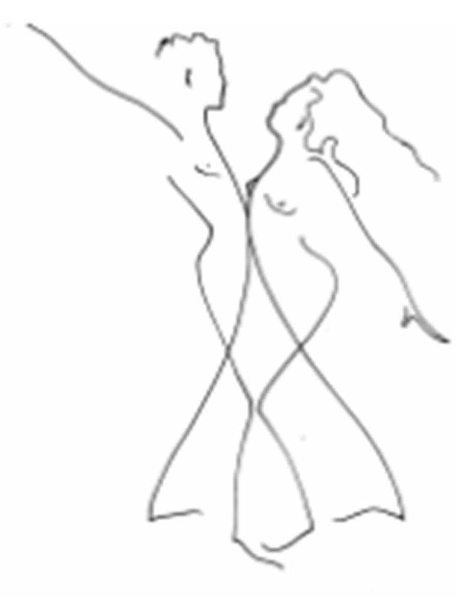

Dancing is my form of self-expression. I love to have wide open spaces to fill up with my moving body, and music with which to dance that touches my soul. Having taught hundreds and hundreds of children in schools and studios across the country, I can say with great authority that I am not alone in appreciating the pleasure of this physical sensation. Encouraging children to move freely and expressively enables them to maintain the body-mind-spirit connection that is a natural part of childhood exploration and development.
Although my clientele has changed from elementary children to college dancers in the last eight years, my basic goals remain the same: Freedom of expression is what I seek to unlock for college students who enroll in the Dance Improvisation class that I teach. Dance Improvisation is spontaneous movement that springs from an internal source within the individual, as opposed to dance technique, which is a codified movement vocabulary that seeks to achieve a standard of excellence.
My training and experience as a Dance Therapist colors my approach to the students I teach. My objective is to educate the whole person, meeting students where they are in their developmental journey and taking them further down the path of self-knowledge. When the course content is dance, this means that the dancer must thoroughly know his or her body in order to move with abandon. When the goal is to teach choreography, the art of making dances, the choreographer must go within to create work that has depth.
One of the most effective ways I have found of helping students access their own authentic movement source is through ‘Dream Dancing.’ Each person’s dreams are both unique and universal. By going to a personal dream as inspiration for dancing, the individual has everything necessary with which to create: story line, plot, images, action, characters, setting, conflict, climax and resolution. The aspect of this experience that opens up the individual to uninhibited movement exploration is that there is not a right or wrong way to dance a dream. Dreams do not conform to the requirements of daily life or aesthetics. They are not necessarily logical or linear, beautiful or harmonious. Therefore, there are no restrictions placed on Dream Dancing!
The Dream Dance Activity
As leader of the Dream Dance Activity, I structure the process carefully to give participants a sense of where the work is going and to answer any initial questions. I assure the dream tellers that they are not required to share anything that feels uncomfortable. I also give permission to stop the dream dancing process if it becomes too difficult or threatening. Then, I talk the participants through each step of the process and facilitate the flow of the session.
Dream Telling
The process begins by selecting a partner with whom one will take turns. The first partner verbally shares her dream material, while her partner witnesses her dream telling. Witnessing involves active listening, without interrupting the dream teller with verbal responses or non-verbal signals of approval or disapproval. This enables the person telling her dream to get into a flow-of-consciousness description of her dream.
Dream Dancing
The first partner relaxes in a comfortable position on the floor and allows images from her dream telling to arise. I invite her to call the dream characters back into her imagination. Then, as the music begins, the dream dancer begins moving through the shapes and postures that became vivid through the dream telling, as well as the physical actions that evolve out of the reenactment. As she explores her dream dance, her partner witnesses her movement, taking in her body posturing, noticing movement patterns, and making sure she is safe in the space (since the dream dancer may close her eyes). Music accompanies the dream dance to support the process and to provide a timeframe in which participants know they will begin, explore and complete their dances.
Closure Dialogue
After the first partner has danced, she receives the gift of a shoulder massage to gently bring her back to alertness. The dream dancer may then begin telling what she experienced or she may ask her witness what he observed, inviting him to reflect back to her what unfolded in the dream dance. (Partners exchange roles and repeat the dream dance process.)
Dream Dance Reflections
After both partners have experienced the roles of dream dancer and witness, I welcome them back together as a group and discuss important personal discoveries. I also ask students to write about and draw their in-class experience of the dream dance. The responses are as unique as the individual.
Jennie Melvin depicts her experience this way:
“One of my favorite things that we did in the class this semester was portraying our dreams through dance improvisation—we entered into a place of solitude and then depicted what we saw or felt. While I was ‘dreaming,’ I had an awesome experience. The image that I had was of me walking through a thick forest, dragging through mud and thorns. To me, it symbolized all the stress I was going through at the time. When I reached the end of the forest, I was on one of the most beautiful beaches I had ever seen. In the water was Jesus. I walked toward him and he cleansed me of all the mud and scrapes all over my body. It was so wonderful to dance this dream out.”
Della Arrington discusses a greater personal awareness that developed out of the dream dance experience:
“A major part of the class that I enjoyed was the process in which we explored our dreams. It was a very interesting period in which I discovered that I really dream some bizarre things. I always have dreams that are either scary or very sensual. Kissing is a major theme within my dreams. As I was closing my eyes and allowing the dream to flow through my body and communicate, it was interesting to just feel my body being taken over by this passion.” Danielle Lowery describes a sense of acceptance that grew out of the dream dance process: “One of my favorite activities was the dream work session. It felt very relaxing to be able to explore my unconscious thoughts, which are usually suppressed. Working with a partner allowed me to verbally express my inner self without being judged, and also get input on how my portrayal of dreams was interpreted with music. The shoulder massage at the end of this activity was wonderful. It was as if we were being rewarded for being ourselves.”
Out of the Nightmare, Into the Light
The Dream Dance is not simply an exercise I reserve for students. I find it to be an excellent way to process my most powerful dreams. I don’t shy away from ‘scary dreams’ that are desperately trying to get my attention. That is where I begin.
The Victim and The Perpetrator
In my dream telling, I begin with an anxiety-producing nightmare:
This woman tells these people she is protecting them from something evil and takes large sums of money from them. However, there is no real threat. I see her go to her car, pop the trunk and inside, there is a barrel. She takes the locked-down lid off and a very wealthy woman very slowly unfolds her body and emerges. People everywhere are being released. Then, the lie of the danger is told to all.
This nightmare brings up very strong feelings in me. Immediately after having this dream, I write in my dream journal:
“I am horrified by the entrapment. I cannot imagine wishing to survive in that barrel. I feel like hurting the woman that trapped those people by making them victims of their own fear. As I awaken, to my horror at seeing this poor woman emerge from this barrel, I say, ’I would never have the will to survive that.’”
My first response to the dream is to sympathize with the wealthy woman who paid a great fortune for protection from her greatest fear: an overwhelming sense of evil. However, there really is no external evil. Instead, her fear traps her in a place that is not fit for human habitation. She hides away from an active life. She allows physical boundaries to contain her. I am horrified by the existence she has had to endure. I can’t imagine being able to tolerate such torment. When she emerges, I can see her wealth; therefore, she must possess obvious gifts.
My next reaction is that I want to punish the woman who has perpetrated this atrocity. The depths of her darkness are unfathomable. How can anyone be so hateful? For me, she embodies the very worst possible female. She wins the trust of the helpless, takes their finest gifts, and then imprisons them with their own permission under false pretenses.
In this dream, I see my shadow reflected in both the victim and the perpetrator. As the victim, I surrender what is best about me to a situation that feels confining at its best and suffocating at its worst. Fearing to expose the very worst in me, I stuff myself into a mold. Even though I cannot breathe, I attempt to keep my Self under control, at all personal costs. The vulnerability of my soul is the victim. As the perpetrator, I commit a most horrific crime of the heart. I convince myself that what I’m doing is a necessary evil. The wild side of me needs to be kept under lock and key. The perpetrator is my Judge, she who knows best.
In the dream, I sell my Self out. I take all my greatest gifts—all of my creativity, love and passion—and stuff them into a filthy, dark, dank barrel which presses in on me and stops everything but the faintest heart beat and shallowest breath. There I sentence my soul to solitary confinement until I can get my Self more in line with my persona. There I waiver, uncertain I can convince myself to keep breathing, where survival does not feel like a worthy choice.
By dancing these characters, I begin to understand why this particular dream came to me. My dream portrays two polar opposites. Perhaps this dream is trying to help me see both of these aspects of myself: the consenting, passive victim and the perpetrator of the crime, the judge. Dancing these dream characters is a very intense experience. This place is too painful for me to linger long. I move into the protagonist of my next dream.
The Goddess
The second dream that I explore in the dream dance portrays a very different image of a woman:
“I am outside in the country on a very sunny day. I’m standing with my legs in a strong, wide stance with my feet planted in the earth, my arms flung open wide, and my head tilted toward the sky. As a snake slithers between my feet, I startle awake.”
This dream character is a Goddess, strong and receptive. Dancing this dream feels delightful! The arm movements open from the heart. My lower body is powerful and grounded. I breathe deeply as I explore this dream image. I look upward as my gestures extend away from my center toward the sky. I also release my body into gravity, sliding toward the floor. The snake brings the connection with the dark, hidden places of the earth. Rolling and pressing against the floor, I connect with this snake energy.

Conclusion
This dream dance experience did not end for me when my class was over. Instead, it highlights my need to further explore these dreams. I dance these dream images in the studio alone. I write about them. I draw the barrel and the Goddess. I narrate the dream dance for witnesses. I process the dreams with a Jungian analyst. I research the Snake Goddess. I compile visual art images that portray both the barrel nightmare and the sunlit dream.
My in-class exploration of this dream dance exercise has sparked the dance that I am currently creating for my dance company. In the process of describing recurring nightmare images and dancing those postures and places that haunt my dreams, I realized I had a dance that needed to unfold. After exploring these dreams further, I knew that I would entitle the dance, ‘Out of the Nightmare, Into the Light.’ The title provides a road map of the dance for me. I begin with the first anxiety-producing dream, take the audience through a full range of nightmare scenarios of oppression, and then move into the light of the Goddess, still grounded by the presence of the snake. The dance is not yet finished, but the process is exhilarating!